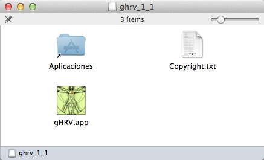
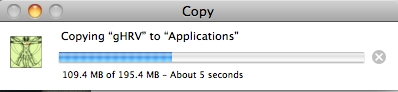
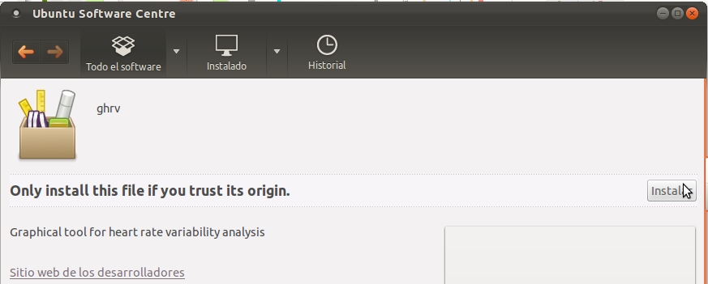

gHRV
A graphical tool for Heart-Rate Variability analysis
This project is maintained by milegroup
Table of contents
Overview
Heart Rate Variability (HRV) can be defined as the variations in the sequence of periods between consecutive heartbeats, and it is regulated by factors extrinsic to the circulatory system. Variability is the result of a trade-off between the influence of the parasympathetic system (accelerating the heart rate) and the sympathetic system (slowing the heart rate). This relationship was experimentally determined by Aselkrod in 1981 [Aksel81]. Since then, its clinical usefulness in various pathologies such as myocardial infarction, hypertension, heart failure, transplantation, etc, has been studied [Malik95] [Task96]. The typical HRV spectrum of a healthy person at rest is mainly composed of two components: a low frequency band (LF), from 0.04 to 0.15 Hz; and a high frequency band (HF) ranging from 0.15 to 0.4 Hz.
HRV analysis has been a very active research field for the last twenty years. Distinct techniques have been proposed in this area, such as spectral analysis, non-lineal techniques or time-domain methods [Achar06] [Chang07] .
At the present moment, HRV analysis has not been established as a standard method for diagnosis. This has conducted providers of medical technology at excluding this type of analysis in their devices, and researchers depend on software applications in order to apply additional processing methods.
The common factor for all the algorithms aimed at helping clinicians in the HRV analysis is the fact that the majority of them have been implemented by particular investigation groups, which are forced to develop their own and proprietary software, due to the lack of a common software package, easily accessible and downloadable, that fulfills the particular requirements of each research association.
To perform this task, many programming languages are employed, such as Matlab [MatHRV], Java [Bogu11], or even LabView [Nati09]. Other software packages alse deserve comment, such as the Kubios-HRV [Nisk04].
Many applications can be found in the literature, including generation of correlated discrete ordinal data arising from longitudinal studies of medical research [Ibra11], detection of breast cancer [Roca12], population pharmacokinetic modeling for analyzing drugs effects and individual variations [Sun11], or time-series analysis [Koso11].
Due to the growing scientific community developing specific software, and attending to the requirements of researchers, that usually need to unify software functionality into one open source and easily extendible tool, we have developed gHRV, a software package for HRV analysis (partially based on RHRV [Rodr11]), in an attempt to help clinicians in the analysis of the heart rate. The gHRV software integrates partially RHRV as mathematical tool, but the user is offered a powerful and simple graphical interface. Central ideas behind its design are easy of installation and of use.
gHRV has been implemented employing Python [Pyth], based on object oriented programming (although it also supports imperative and functional programming), giving clean and legible code, which improves software maintenance. Besides, it makes a quite efficient use of memory and it is very extensible, thanks to libraries available to programmers. These advantages make Python one of the ten most used programming languages in this moment. Appart from these benefits, Python provides:
- A high grade of efficiency and portability.
- Efficient and flexible libraries, which allow to implement a graphical interface, advanced mathematical functions and highly customizable plotting capability.
- Developing tools (IDEs or Integrated Development Environments, compilers, debuggers...) freely available for distinct operating systems.
gHRV is a simple and easy-to-use graphical interface, and guided interaction with the user is performed in order to minimize errors and functional problems. With this purpose, the interface enables or disables interactive elements depending on the state of the interaction.
An important functionality of gHRV is the possibility to deal with different episodes (apnea, ischemia,...), creating or adding new episodes or deleting existing ones, and to obtain time evolution of power in frequency bands.
The following main functionalities are provided:
- Heartbeats: file loading, automatic filtering, manual filtering and interpolation.
- Episodes: file loading, removing all episodes and editing.
- Frame-based evolution: time evolution of power in frequency bands.
- Poincaré plots: representation of the Poincaré plots of the RR (beat-to-beat) intervals.
- Significance analysis: statistical analysis of spectral parameters, in and out episodes.
Details of the implementation and installation instructions are now given in the next Section.
Getting started
License and disclaimer
This program is free software: you can redistribute it and/or modify it under the terms of the GNU General Public License as published by the Free Software Foundation, either version 3 of the License, or (at your option) any later version.
This program is distributed in the hope that it will be useful, but WITHOUT ANY WARRANTY; without even the implied warranty of MERCHANTABILITY or FITNESS FOR A PARTICULAR PURPOSE. See the GNU General Public License for more details.
System Requirements
To run gHRV on you computer, you can select Windows, Linux or Mac OSX operating systems. Minimal system requirements are:
- Windows
- Windows XP or newer, 32 or 64 bits.
- Mac OSX
- MacOSX Lion or newer.
- Linux
- Recent distribution based on deb packages. Tested on Ubuntu 11.10, 12.04 LTS and 12.10.
Downloading gHRV
Previous to the installation of gHRV, you should download it from http://milegroup.github.com/ghrv/packages.html. gHRV is distributed as free software (GNU GPL) and binaries for Windows, MacOSX and Debian/Ubuntu systems are provided as well.
For downloading gHRV, select the corresponding version for you operating system. Different versions are avalaible. Version 1.1 is a stable and recommended version, that will be explained in this Manual. In this documentation, X and YY refer to the version and the subversion of the gHRV program.
Appart from the binaries for the different operating systems, you can also download the source code (explained later in this Section), and example files, among others:
- An ascii file containing beats positions: beat_ascii.txt.
- An ascii file containing episodes: episodes.txt.
- A simple gHRV project with episodes: SimpleProject.gHRV.
Installing gHRV
Once you have downloaded gHRV, you must install it in your computer as follows.
Windows
Windows binary is available as a gHRV_X_YY.msi file. Installation is straightforward: double click on the downloaded file. First, the installer must be authorized to proceed.
Windows installation: security warning
The gHRV setup wizard is now open; just follow the instructions to complete the installation process.

Windows installation: setup wizard
After license agreement, gHRV is installed on your system. Installation also creates a link of the tool in your desktop.
gHRV has been tested on Windows XP and Windows 7 (32 and 64 bits).
OSX
OSX binary is distributed as a gHRV_X_YY.dmg file. To install, open the file and a new window appears with a file named gHRV.app inside.
OSX installation: folder containing the installation files for gHRV
Just drag this file to the Applications folder.
Installing gHRV in OSX
Then, you can eject the unit that was mounted by the .dmg file. gHRV has been tested on OSX Mountain Lion and OSX Lion.
Deb-based linux systems
gHRV is distributed as a gHRV_X.YY_all.deb package. The easiest way to install is to download this package, open a terminal and change to the directory where the file is. Then use the commands:
$ sudo apt-get install gdebi
$ sudo gdebi gHRV_X.YY_all.deb
gdebi installs gHRV and its dependencies. The program is avalaible both in the Start menu and in console mode as gHRV.
You can also install gHRV with the Software Centre.

Installing gHRV in Linux Software Centre
Click on Open with and, on the next step, click on Install.
Installing gHRV in Linux Software Centre (II)
gHRV has been tested on a Ubuntu 11.10, 12.04 LTS and 12.10 systems
Source package
gHRV sources are distributed as a gHRV_X.YY.tar.gz. Advanced users can run the program from the source code. A working installation is needed for the Python programming language with the following libraries:
- Matplotlib
- wxPython
- Numpy
- Scipy
In Linux debian-based systems, just open a terminal and use the following command:
$ sudo apt-get install python-numpy python-wxgtk2.8 python-matplotlib python-scipy
Then, go to the directory where the .tar.gz was extracted and use:
$ python gHRV.py
Uninstalling gHRV
If you want to uninstall gHRV from your computer, follow the next instructions.
Windows
To uninstall gHRV, go to Start -> Control Panel -> Add or Remove programs, select gHRV and press the Remove button.
OSX
To uninstall gHRV, just drag the gHRV program from the Applications folder to the Trash folder.
Deb-based linux systems
To uninstall gHRV, open a terminal and use the command:
$ sudo apt-get remove ghrv
References
- [Achar06]
- U.R. Acharya, K.P. Joseph, N. Kannathal, C.M., Lim, J.S. Suri, Heart rate variability: a review, Medical and Biomedical Engineering and Computing 44, 1031-1051 (2006).
- [Aksel81]
- S. Akselkrod, D. Gordon, F.A. Ubel, D.C. Shannon, A.C. Barger, R.J. Cohen, Power spectrum analysis of heart rate fluctuation: a quantitative probe of beat to beat cardiovascular control, Science 213, 220-222 (1981)
- [Bogu11]
- Bogunovik, HRV-Frame: Java-based framework for feature extraction from cardiac rythm, Lecture Notes in Computer Science 6747, 96-100 (2011).
- [Chang07]
- F.C. Chang, C.K. Chang, C.C. Chiu, S.F. Hsu, Y.D. Lin, Variations of HRV Analysis in Different Approaches, In Computers in Cardiology 34, 17-20 (2007).
- [Ibra11]
- N.A. Ibrahim, S. Suliadi, S., Generating correlated discrete ordinal data using R and SAS IML, Computer Methods and Programs in Biomedicine, 104, 122e-132e (2011).
- [Koso11]
- H. Kosorus, J. Honigl, J. Kung, Using R, WEKA and RapidMiner in time series analysis of sensor data for structural health monitoring. Proceedings of DEXA 2011, 306 – 310 (2011).
- [Malik95]
- M. Malik, A.J. Camm, Heart rate variability. Futura (1995)
- [MatHRV]
- http://www.macalester.edu/~kaplan/hrv/doc/
- [Nati09]
- National Instruments. Using LabVIEW for heart rate variability analysis. Published online at http://zone.ni.com/devzone/cda/epd/p/id/5832 on Apr 24, 2009.
- [Nisk04]
- J.P. Niskanen, M.P. Tarvainen, P.O. Ranta-aho, P.A. Karjalainen, Software for advanced HRV analysis, Computer Methods and Programs in Biomedicine 76, 73-81 (2004).
- [Pyth]
- http://www.python.org
- [Roca12]
- J. Roca-Pardiñas, M.J. Lado, P.G.Tahoces, C. Cadarso-Suárez, Reducing false positives in a CAD scheme for detecting breast microcalcificacions: a cuantitative study with GAMs, Cancer Prevention, (Alexandros Georgakilas, Ed.), 459-476 (2012).
- [Rodr11]
- L. Rodríguez-Liñares, A.J. Méndez, M.J. Lado, D.N. Olivieri, X.A. Vila, X.A., I. Gómez-Conde, An open source tool for heart rate variability spectral analysis. Computer Methods and Programs in Biomedicine 103, 39-50 (2011).
- [Sun11]
- X. Sun, K. Wu, D. Cook, PKgraph: An R package for graphically diagnosing population pharmacokinetic models. Computer Methods and Programs in Biomedicine, 104, 461-471 (2011).
- [Task96]
- Task Force of the European Society of Cardiology the North American Society of Pacing Electrophysiology, Heart rate variability: standards of measurement, physiological interpretation, and clinical use, Circulation 93, 1043-1065 (1996)